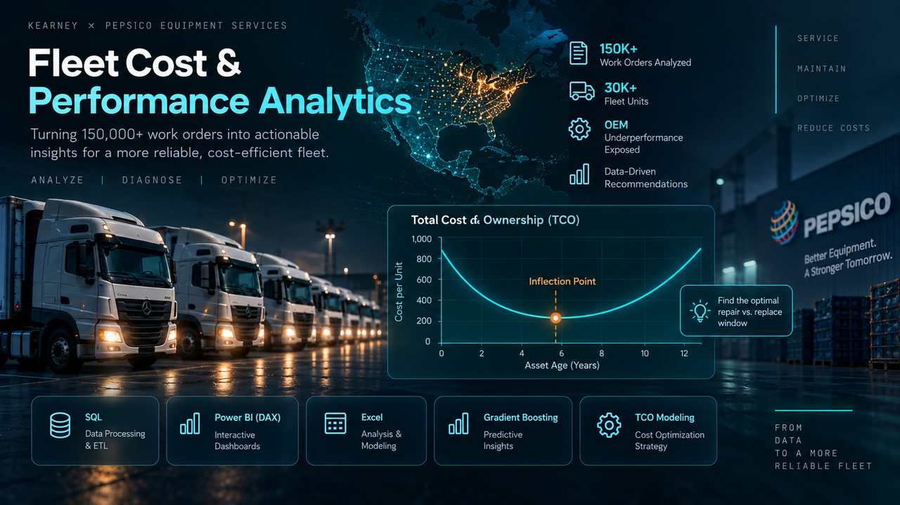

ST
ST
Fleet Cost & Performance Analytics
Kearney · PepsiCo Equipment Services · Live client engagement
Large-scale operational analytics supporting asset performance and cost decisions — ETL and data-quality workflows, predictive analytical models, and interactive dashboards built for business stakeholders.
TECH
SQL · Python · Power BI (DAX) · Advanced Excel · ETL & Data Quality · Predictive Modeling